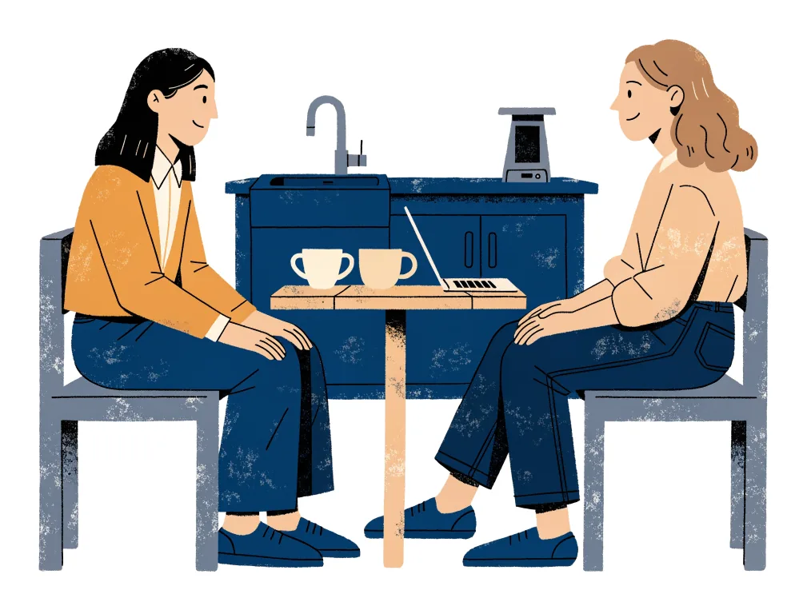
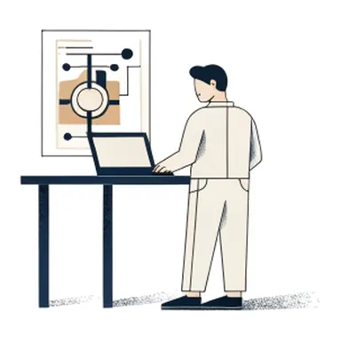
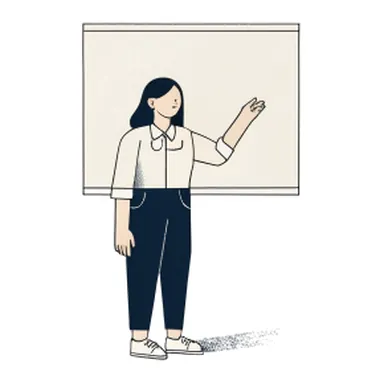
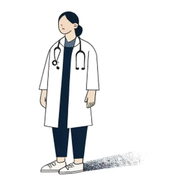
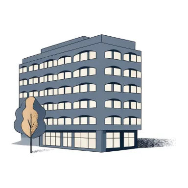
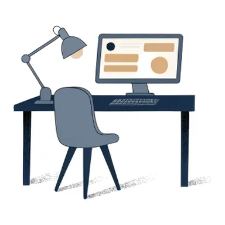

배우기 전에 먼저 해 보세요. 틀려도 괜찮아요.
'저는 일하지 않아요'는 독일어로 어떻게 말할까요?
nicht는 동사 앞이 아니라 뒤에 와요.
23은 독일어로 어떻게 읽을까요?
독일어는 일의 자리를 먼저 말해요. '3 그리고 20'이에요.

서로 이름을 알았으니 이제 무슨 일을 하는지 이야기해요. Jiu는 집에서, Dohyun은 회사에서, Sora는 어학원 사무실에서 자기 이야기를 하고 연락처를 알려 줘요.
문법 Präsens (alle Personen), Ja-/Nein-Fragen, Zahlen 0–100, nicht
과제대학수강 신청서에 내 정보 써넣기
과제직장명함을 주고받으며 연락처 묻기
이 과를 마치면 직업이나 전공, 할 줄 아는 언어를 말하고 전화번호와 이메일 주소를 주고받을 수 있어요.
이 과에서 쓸 말이에요. 눌러서 먼저 들어 보세요.
배우기 전에 먼저 해 보세요. 틀려도 괜찮아요.
'저는 일하지 않아요'는 독일어로 어떻게 말할까요?
nicht는 동사 앞이 아니라 뒤에 와요.
23은 독일어로 어떻게 읽을까요?
독일어는 일의 자리를 먼저 말해요. '3 그리고 20'이에요.
Lektion 1의 낱말 다섯 개를 다시 떠올려 보세요.
저녁, Jiu가 사는 셰어하우스(WG)의 부엌이에요. 같이 사는 Lena가 Jiu에게 이것저것 물어요.
들으면서 찾아보세요. Lena는 무엇을 전공하나요?
회사 탕비실이에요. Markus가 Dohyun에게 팀 사람들 이야기를 해 줘요.
들으면서 찾아보세요. Frau Hoffmann은 몇 개 언어를 하나요?
어학원 사무실이에요. 직원 Frau Wagner가 Sora의 연락처를 물어요.
들으면서 찾아보세요. Sora는 지금 일을 하나요?
세 대화를 듣고 답하세요.
Jiu는 프랑크푸르트에서 무엇을 하나요?
Lena는 무엇을 전공하나요?
Dohyun ist Ingenieur.
Frau Hoffmann kommt aus Frankfurt.
Frau Hoffmann은 쾰른(Köln) 출신이에요.
Frau Hoffmann은 몇 개 언어를 하나요?
Die Kollegen sprechen Englisch.
Sora의 이메일 주소는 무엇인가요?
Bindestrich는 붙임표(-), Punkt는 점이에요.
Sora arbeitet jetzt nicht.
낱말 37개예요. 낱말이나 예문 앞의 단추를 누르면 소리가 나요. 명사는 der, die, das를 색으로 구분했어요.
der Beruf, die Berufe 직업
Was sind Sie von Beruf?직업이 무엇인가요?
arbeiten 일하다
Ich arbeite bei Kessler Technik.저는 Kessler Technik에서 일해요.
studieren 대학에서 공부하다, 전공하다
Lena studiert Biologie.Lena는 생물학을 전공해요.
lernen 배우다
Wir lernen Deutsch.우리는 독일어를 배워요.

der Ingenieur, die Ingenieure 엔지니어 (남자)
Dohyun ist Ingenieur.Dohyun은 엔지니어예요.
die Ingenieurin, die Ingenieurinnen 엔지니어 (여자)
Sie ist Ingenieurin von Beruf.그녀의 직업은 엔지니어예요.
der Student, die Studenten 대학생 (남자)
Er ist Student in Frankfurt.그는 프랑크푸르트에서 대학에 다녀요.
die Studentin, die Studentinnen 대학생 (여자)
Lena ist Studentin.Lena는 대학생이에요.
der Lehrer, die Lehrer 교사 (남자)
Herr Braun ist Lehrer.Herr Braun은 교사예요.

die Lehrerin, die Lehrerinnen 교사 (여자)
Frau Becker ist Lehrerin.Frau Becker는 교사예요.
der Arzt, die Ärzte 의사 (남자)
Er ist Arzt in Mainz.그는 마인츠에서 의사로 일해요.

die Ärztin, die Ärztinnen 의사 (여자)
Sie ist Ärztin.그녀는 의사예요.

die Firma, die Firmen 회사
Die Firma heißt Kessler Technik.회사 이름은 Kessler Technik이에요.

das Büro, die Büros 사무실
Markus ist im Büro.Markus는 사무실에 있어요.
die Universität, die Universitäten 대학교
Die Universität ist in Frankfurt.그 대학교는 프랑크푸르트에 있어요.
das Team, die Teams 팀
Wir sind ein Team.우리는 한 팀이에요.
sprechen (du sprichst, er spricht) 말하다
Ich spreche Koreanisch und Englisch.저는 한국어와 영어를 해요.
die Sprache, die Sprachen 언어
Frau Hoffmann spricht drei Sprachen.Frau Hoffmann은 세 개 언어를 해요.
Deutsch 독일어
Wir sprechen hier Deutsch.여기서는 독일어로 말해요.
Englisch 영어
Sprechen Sie Englisch?영어 하세요?
Koreanisch 한국어
Sprichst du Koreanisch?한국어 해요?
ein bisschen 조금
Ich spreche ein bisschen Deutsch.저는 독일어를 조금 해요.
gut 잘, 좋은
Dein Deutsch ist gut!독일어 잘하네요!
nicht ~하지 않다, ~이 아니다
Ich arbeite nicht.저는 일하지 않아요.
noch nicht 아직 ~ 아니다
Ich spreche noch nicht gut Deutsch.저는 아직 독일어를 잘하지 못해요.
leider 아쉽게도
Nein, leider nicht.아니요, 아쉽게도 아니에요.
die Telefonnummer, die Telefonnummern 전화번호
Wie ist Ihre Telefonnummer?전화번호가 어떻게 되세요?
die Handynummer, die Handynummern 휴대폰 번호
Wie ist deine Handynummer?휴대폰 번호가 뭐예요?
die E-Mail-Adresse, die E-Mail-Adressen 이메일 주소
Wie ist Ihre E-Mail-Adresse?이메일 주소가 어떻게 되세요?
die Adresse, die Adressen 주소
Meine Adresse ist Musterstraße 12.제 주소는 Musterstraße 12예요.
die Straße, die Straßen 길, 거리
Die Straße heißt Musterstraße.길 이름은 Musterstraße예요.
die Postleitzahl, die Postleitzahlen 우편번호
Die Postleitzahl ist 60487.우편번호는 60487이에요.
die Zahl, die Zahlen 숫자
Die Zahl ist zwölf.그 숫자는 12예요.
zusammen 함께
Wir arbeiten zusammen.우리는 함께 일해요.
alle 모두
Alle sprechen Englisch.모두 영어를 해요.
was 무엇
Was studierst du?무엇을 전공해요?
hier 여기
Arbeitest du hier?여기서 일해요?
이 과의 낱말로 여덟 문제를 풀어요.
줄을 누르면 소리가 나요. 13부터 19까지는 -zehn으로 끝나요. 21부터는 일의 자리를 먼저 말하고 und로 이어요. 21은 einundzwanzig, 곧 '1 그리고 20'이에요. 30은 dreißig라고 쓰고, 나머지 십의 자리는 -zig로 끝나요.
규칙
1과에서 ich, du, Sie를 배웠어요. 다른 사람 이야기를 할 때 남자는 er, 여자는 sie로 받고 동사는 -t로 끝나요. wir(우리)와 sie(그들)는 Sie처럼 -en, ihr(너희)는 -t예요.
| lernen | arbeiten | sprechen | |
|---|---|---|---|
| ich | lerne | arbeite | spreche |
| du | lernst | arbeitest | sprichst |
| er, sie | lernt | arbeitet | spricht |
| wir | lernen | arbeiten | sprechen |
| ihr | lernt | arbeitet | sprecht |
| sie, Sie | lernen | arbeiten | sprechen |
주의 arbeiten처럼 어간이 -t로 끝나면 발음하기 쉽게 e를 넣어요. sprechen은 du와 er, sie에서 e가 i로 바뀌어요. 이런 동사는 5과에서 더 배워요. sein은 ich bin, du bist, er ist, wir sind, ihr seid, sie sind예요.
규칙을 보고 바로 확인해 보세요.
er나 sie처럼 다른 한 사람이 주어일 때 동사는 어떻게 끝나나요?
규칙
의문사가 없는 질문은 동사가 맨 앞에 와요. 주어는 바로 뒤에 와요. 문장 끝을 올려서 말해요.
| 1 동사 | 2 주어 | 나머지 |
|---|---|---|
| Arbeitest | du | hier? |
| Sprechen | Sie | Englisch? |
| Kommt | Frau Hoffmann | aus Frankfurt? |
주의 한국어는 문장 끝만 바꾸면 질문이 되지만 독일어는 동사와 주어의 자리를 바꿔요. Sie sprechen Englisch. → Sprechen Sie Englisch?
규칙을 보고 바로 확인해 보세요.
네, 아니요로 답하는 질문은 무엇으로 시작하나요?
규칙
nicht는 동사 뒤에 와요. 뒤에 다른 말이 없으면 문장 끝에 와요. aus Frankfurt, in Mainz, gut처럼 장소나 상태를 나타내는 말이 있으면 그 앞에 와요.
| 긍정 | 부정 |
|---|---|
| Ich arbeite. | Ich arbeite nicht. |
| Sie kommt aus Köln. | Sie kommt nicht aus Köln. |
| Er wohnt in Mainz. | Er wohnt nicht in Mainz. |
| Das ist richtig. | Das ist nicht richtig. |
주의 한국어 '안'은 동사 앞에 오지만 nicht는 동사 앞에 오지 않아요. Ich nicht arbeite.는 틀린 문장이에요. 명사를 부정하는 kein은 4과에서 배워요.
규칙을 보고 바로 확인해 보세요.
Ich arbeite nicht.에서 nicht는 어디에 있나요?
숫자를 듣고 알맞은 것을 고르세요.
어떤 숫자인가요?
dreiundvierzig
어떤 숫자인가요?
siebzehn
어떤 숫자인가요?
achtundsechzig
Markus의 전화번호는 무엇인가요?
Meine Nummer ist null, sechs, neun, neun, null, null, null, neun, eins, eins, acht.
이메일 주소를 듣고 알맞은 것을 고르세요.
어떤 주소인가요?
lena, Punkt, schmidt, at, example, Punkt, org
어떤 주소인가요?
m, Bindestrich, weber, at, example, Punkt, com
명함을 읽고, 맞으면 richtig, 틀리면 falsch를 고르세요. GmbH는 회사 형태를 나타내는 말이에요.
Visitenkarte
Dohyun Park
Ingenieur
Kessler Technik GmbH
Musterstraße 12, 60487 Frankfurt am Main
Telefon: 069 90009-124
E-Mail: dohyun.park@example.org
Herr Park ist Ingenieur.
Die Firma heißt Kessler Technik.
Herr Park arbeitet in Mainz.
회사는 Frankfurt am Main에 있어요.
Die Postleitzahl ist 60487.
Die Telefonnummer ist 069 90009-142.
명함의 번호는 069 90009-124예요.
알맞은 동사 형태를 고르세요.
Lena Biologie.
Wir Deutsch.
du Englisch?
Markus und Dohyun zusammen.
Frau Hoffmann drei Sprachen.
ihr Studenten?
낱말을 순서대로 눌러 질문을 만드세요.
영어 하세요?
프랑크푸르트에서 일해요?
Markus는 함부르크 출신이에요?
Lena는 대학생이에요?
낱말을 순서대로 눌러 부정하는 문장을 만드세요.
저는 일하지 않아요.
그녀는 쾰른 출신이 아니에요.
그것은 맞지 않아요.
그는 마인츠에 살지 않아요.
계산한 답을 독일어 숫자로 쓰세요.
zwanzig + drei =
dreißig + zehn =
fünfzig + fünfzig =
siebzig – drei =
남자를 가리키는 말과 여자를 가리키는 말을 짝지으세요.
듣고 그대로 써 보세요.
Ich spreche ein bisschen Deutsch. 저는 독일어를 조금 해요.
Wir arbeiten zusammen. 우리는 함께 일해요.
Wie ist Ihre Telefonnummer? 전화번호가 어떻게 되세요?
Was sind Sie von Beruf? / Was bist du von Beruf? 직업이 무엇인가요?
Was machen Sie beruflich? 무슨 일을 하세요?
Ich bin Ingenieur. / Ich bin Ingenieurin. 저는 엔지니어예요.
Ich arbeite bei … 저는 …에서 일해요.
Ich arbeite jetzt nicht. 지금은 일하지 않아요.
Was studierst du? 무엇을 전공해요?
Ich studiere Informatik. 저는 컴퓨터공학을 전공해요.
Ich lerne Deutsch. 저는 독일어를 배워요.
Sprechen Sie Englisch? / Sprichst du Englisch? 영어 하세요?
Ich spreche Koreanisch, Englisch und ein bisschen Deutsch. 저는 한국어와 영어를 하고 독일어를 조금 해요.
Wie ist Ihre Telefonnummer? / Wie ist deine Handynummer? 전화번호가 어떻게 되세요?
Wie ist Ihre E-Mail-Adresse? 이메일 주소가 어떻게 되세요?
Meine Nummer ist … 제 번호는 …예요.
Wie bitte? Langsam, bitte. 뭐라고요? 천천히 말해 주세요.
Noch einmal, bitte. 한 번 더 말해 주세요.
과제 고르기
역할 대화와 말하기, 쓰기 과제는 대학 생활과 직장 생활 두 가지예요. 하나를 고르면 다음 과에서도 그쪽 과제가 나와요. 언제든 바꿀 수 있어요.
대화 A에서 역할을 하나 고르세요. 상대의 말은 음성으로 나오고, 내 차례에는 직접 말해요.
대화 B에서 역할을 하나 고르세요. 상대의 말은 음성으로 나오고, 내 차례에는 직접 말해요.
서식에서 Vorname는 이름, Nachname는 성이에요. Studienfach에는 전공이나 앞으로 공부할 분야를 써요. 전화번호와 이메일은 지어낸 것을 써도 괜찮아요.
Anmeldung: Deutschkurs A1.1
아래 글을 소리 내어 읽고, 익숙해지면 보지 않고 말해 보세요.
Ich heiße Minji Choi und komme aus Korea.
Ich wohne in Frankfurt.
Ich studiere Informatik.
Ich spreche Koreanisch und Englisch.
다 한 뒤에 확인해 보세요.
어학원 사무실에서 수강 신청을 해요. 직원 Frau Wagner가 신청서에 적을 내용을 물어요. 직원에게는 Sie로 답하세요. 질문을 듣고 소리 내어 답한 뒤 예시 답과 비교해 보세요.
Guten Tag! Wie heißen Sie, bitte? 안녕하세요! 성함이 어떻게 되세요?
Guten Tag! Ich heiße Minji Choi.
Woher kommen Sie, Frau Choi? Frau Choi, 어디에서 오셨어요?
Ich komme aus Korea.
Arbeiten Sie hier in Frankfurt? 여기 프랑크푸르트에서 일하세요?
Nein, ich arbeite nicht. Ich lerne Deutsch. Dann studiere ich Informatik.
Wie ist Ihre Telefonnummer? 전화번호가 어떻게 되세요?
Meine Nummer ist null, eins, sieben, sechs, null, vier, null, sechs, neun, null, fünf, fünf.
Und wie ist Ihre E-Mail-Adresse? 이메일 주소는 어떻게 되세요?
minji, at, example, Punkt, com.
Vielen Dank, Frau Choi. Bis Montag! 감사합니다, Frau Choi. 월요일에 뵙겠습니다!
Danke schön! Bis Montag! Auf Wiedersehen!
독일 명함에는 보통 이름, 직업이나 직함, 회사, 도시, 전화번호, 이메일을 적어요. 여자는 직업 이름 끝에 -in을 붙여요. 전화번호와 이메일은 지어낸 것을 써도 괜찮아요.
Visitenkarte
아래 글을 소리 내어 읽고, 익숙해지면 보지 않고 말해 보세요.
Guten Tag! Mein Name ist Minji Choi.
Ich bin Ingenieurin von Beruf.
Ich arbeite bei Kessler Technik in Frankfurt.
Meine Telefonnummer ist 069 90009-131.
다 한 뒤에 확인해 보세요.
업무 행사에서 만난 Herr Schneider와 명함을 주고받아요. 처음 만난 사이니까 Sie로 답하세요. 질문을 듣고 소리 내어 답한 뒤 예시 답과 비교해 보세요.
Guten Tag! Mein Name ist Peter Schneider. Wie heißen Sie? 안녕하세요! 제 이름은 Peter Schneider입니다. 성함이 어떻게 되세요?
Guten Tag, Herr Schneider! Ich heiße Minji Choi.
Freut mich, Frau Choi! Was sind Sie von Beruf? 반갑습니다, Frau Choi! 직업이 무엇인가요?
Ich bin Ingenieurin. Ich arbeite bei Kessler Technik.
Sprechen Sie auch Englisch? 영어도 하세요?
Ja, ich spreche Koreanisch, Englisch und ein bisschen Deutsch.
Wie ist Ihre Telefonnummer? 전화번호가 어떻게 되세요?
Meine Nummer ist null, sechs, neun, neun, null, null, null, neun, eins, drei, eins.
Und wie ist Ihre E-Mail-Adresse? 이메일 주소는 어떻게 되세요?
m, Punkt, choi, at, example, Punkt, org.
Vielen Dank! Auf Wiedersehen! 감사합니다! 안녕히 가세요!
Danke schön, Herr Schneider! Auf Wiedersehen!
Ich kann meinen Beruf oder mein Studienfach nennen.직업이나 전공을 말할 수 있어요.
Ich kann sagen, welche Sprachen ich spreche.내가 할 줄 아는 언어를 말할 수 있어요.
Ich kann Telefonnummern und E-Mail-Adressen sagen und verstehen.전화번호와 이메일 주소를 말하고 알아들을 수 있어요.
Ich kann bis 100 zählen.100까지 셀 수 있어요.